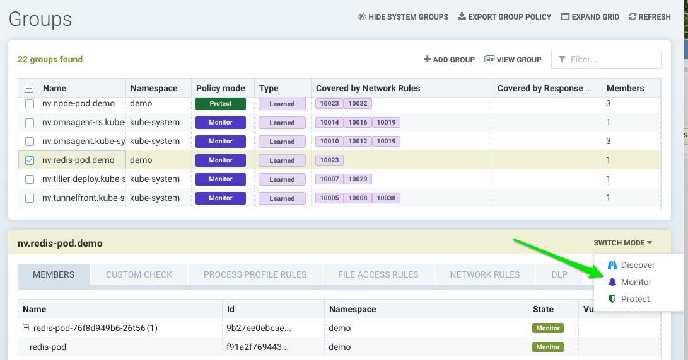
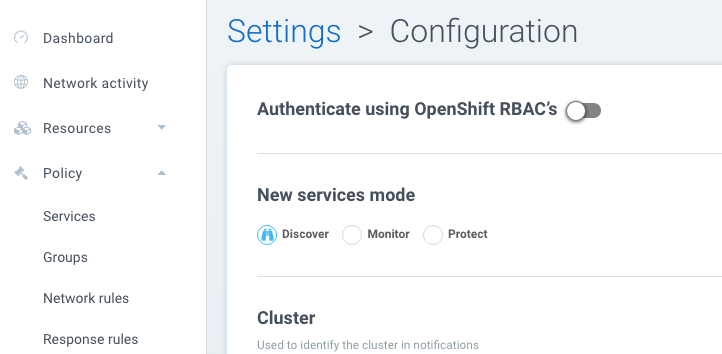
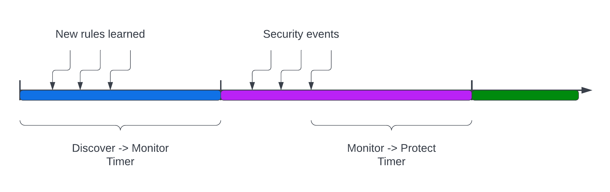

Modes: Discover, Monitor, Protect
SUSE® Security Modes
The SUSE® Security Violation Detection module has three modes: Discover, Monitor, and Protect. At any point in time, any Group (beginning with 'nv', or the 'Nodes' group) can be in any of these modes. The mode can be switched from the Groups menu, Network Activity view, or the Dashboard. Container Groups can have Process/File rules in a different mode than Network rules, as described here.

|
Custom created groups don’t have a Protection mode. This is because they may contain containers from different underlying groups, each of which may be in a different mode, causing confusion about the behavior. |
Discover
By default, SUSE® Security starts in Discover mode. In this mode, SUSE® Security:
-
Discovers your container infrastructure, including containers, nodes, and hosts.
-
Learns your applications and behaviors by observing conversations (network connections) between containers.
-
Identifies separate services and applications running.
-
Automatically builds a whitelist of Network Rules to protect normal application network behavior.
-
Baselines the processes running in containers for each service and creates whitelist Process Profile Rules.
|
To determine how long to run a service in Discover mode, run test traffic through the application and review all rules for completeness. Several hours should be sufficient, but some applications may require a few days to be fully exercised. When in doubt, switch to Monitor mode and check for violations, which can then be converted to whitelist rules before moving to Protect mode. |
Monitor
In Monitor mode SUSE® Security monitors conversations and detects run-time violations of your Security Policy. In this mode, no new rules are created by SUSE® Security, but rules can manually be added at any time.
When violations are detected, they are visible in the Network Activity map visually by a red line. Violations are also logged and displayed in the Notifications tab. Process profile rule and file access violations are logged into Notifications → Security Events.
In the Network map you can click on any conversation (green, yellow, red line) to display more details about the type of connection and protocol last monitored. You can also use the Search and Filter by Group buttons in the lower right to narrow the display of your containers.
Protect
In Protect mode, SUSE® Security enforcers will block (deny) any network violations and attacks detected. Violations are shown in the Network map with a red ‘x’ in them, meaning they have been blocked. Unauthorized processes and file access will also be blocked in Protect mode. DLP sensors which match will block network connections.
Switching Between Modes
You can easily switch SUSE® Security Groups from one mode to another. Remember that in Discover mode, SUSE® Security is building a Security Policy for allowed, normal container behavior. You can see these rules in the Policy → Groups tab or in detail in the Policy → Network Rules menu.
When you switch from Discover to Monitor mode, SUSE® Security will flag all violations of normal behavior not explicitly allowed. Because SUSE® Security enforces policy based on applications and groups with similar attributes, it’s typically not necessary to add or edit rules when scaling up or scaling down containers.
Please ensure that, before introducing new updates that result in new types of connections between containers, you switch the affected Service(s) to Discover mode to learn these new behaviors. Alternatively, you can manually add new rules while in any mode, or edit the CRD used to create the rules to add new behaviors.
New Service Mode
If new services are discovered by SUSE® Security, for example a previously unknown container starts running, it can be set to a default mode. In Discover mode, SUSE® Security will start to learn its behavior and build Rules. In Monitor, a violation will be generated when connections to the new service are detected. In Protect, all connections to the new service will be blocked unless the rules have been created prior.

Network Service Policy Mode
There is a global setting available in Settings → Configuration to separately set the network protection mode for enforcement of network rules. Enabling this (default is disabled), causes all network rules to be in the protection mode selected (Discover, Monitor, Protect), while process/file rules remain in the protection mode for that Group, as displayed in the Policy → Groups screen. In this way, network rules can be set to Protect (blocking), while process/file policy can be set to Monitor, or vice versa.
Automated Promotion of Group Modes
Promotes a Group’s protection Mode based on elapsed time and criteria. This automation does not apply to CRD created Groups. This features allows a new application to run in Discover for some time period, learning the behavior and SUSE® Security creating allow-list rules for Network and Process, then automatically moving to Monitor, then Protect mode.
The criterion for moving from Discover to Monitor mode is: elapsed time for learning all network and process activity of at least one live pod in the Group. For example, if this is set to 7 days, then 7 days after a running pod for the group is detected, the mode will be automatically promoted to Monitor.
The criterion for moving from Monitor to Protect mode is: there are no security events (network, process etc) for the timeframe set for the Group. For example, if this is set to 14 days, then if no violations (network, process, file) are triggered for 14 days (e.g. the quiet period), then the mode is automatically promoted to Protect. If there are no running pods in the group, the promotion will not occur.

Conflict Resolution Between Services In Different Modes
For network connections between containers in different service groups, if their policy modes are different, the following table shows how the system resolves the conflicts.
| Source | Destination | Effective Mode |
|---|---|---|
Discover |
Monitor |
Discover |
Discover |
Protect |
Discover |
Monitor |
Discover |
Discover |
Monitor |
Protect |
Monitor |
Protect |
Discover |
Discover |
Protect |
Monitor |
Monitor |
As you can see, the effective mode always defaults to the least restrictive policy mode.
|
The above applies only for Network Rules |